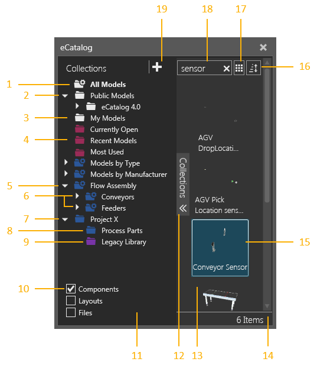
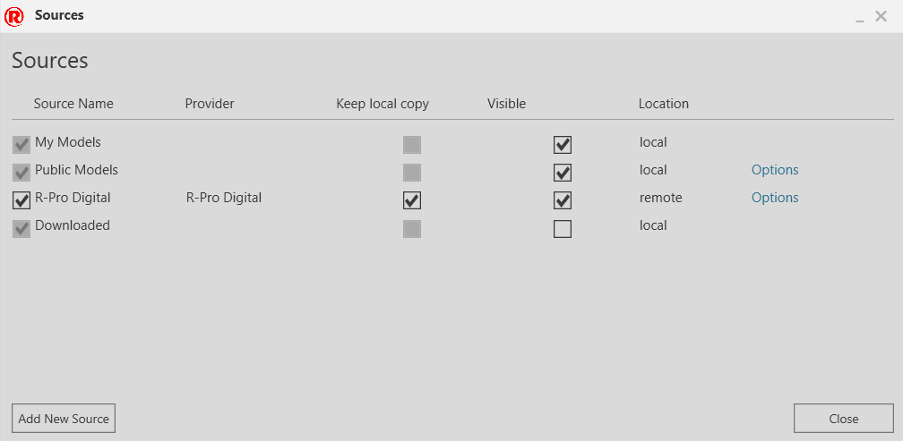
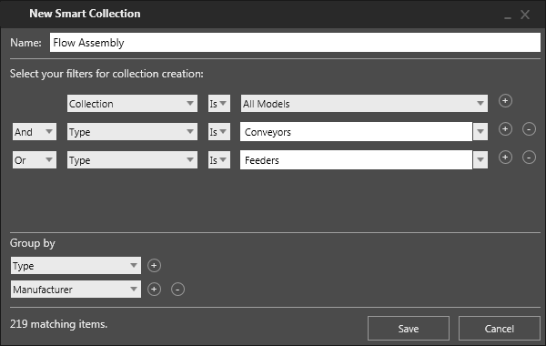
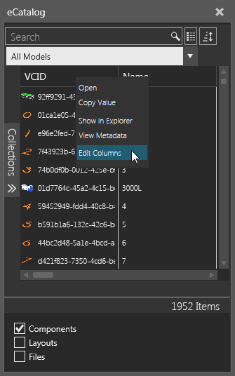
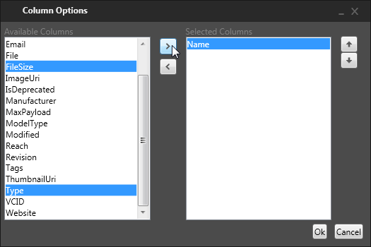
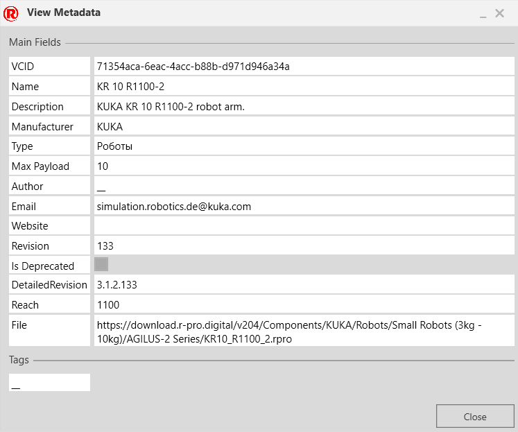

The eCatalog panel allows you manage connected sources of files and load those files in the 3D world.

| 1. | System Collection for All Linked Files |
| 2. | System Source for Public Documents |
| 3. | System Source for My Documents |
| 4. | System Collection for Usage History |
| 5. | Smart Collection |
| 6. | Smart Collection Groups |
| 7. | Collection Group |
| 8. | Collection |
| 9. | Source |
| 10. | Collection Filters |
| 11. | Collections Pane |
| 12. | Collections Vertical Expander |
| 13. | Display Area |
| 14. | Number of Listed Items |
| 15. | Selected Item |
| 16. | Display Options |
| 17. | Sorting Options |
| 18. | Search Box |
| 19. | Edit Sources Button |
Contents ShowHide
At the upper-right corner of the Collections pane is an Edit Sources button for accessing a Sources editor. This allows you add and edit local and remote sources of files linked to the eCatalog panel.

| Name | Description |
| Source Name | Name of source. Its check box turns on/off the use of the source. Double-click the field to edit the nickname of source. |
| Provider | Publisher of source. |
| Keep local copy | Turns on/off the download and storage of remote source files as local copies on device. |
| Visible | Turns on/off the listing of the source in the Collections pane. |
| Location | Indicates if source is local or remote. |
| Options | Allows the directory of a local copy to be changed or deleted from device. |
| Remove | Removes the source from eCatalog panel. |
| Add New Source | Allows a new source to be added to eCatalog panel. |
The eCatalog panel is synchronized with sources using the Task Scheduler of Windows operating system. By default, this task is scheduled to occur once per day.
A smart collection allows you to create and save a custom search for files in sources linked to the eCatalog panel. In the Collections pane, double-click a listed smart collection to access its editor.

| Name | Description |
| Name | Defines the name of smart collection. |
| Filters | Defines an ordered list of search conditions used to select which
items are linked to smart collection.
Field Criteria Example Plus Sign Minus Sign Logical |
| Group by | Groups matching items by one or more fields in ascending order. |
| N matching items | Indicates the number of items linked to smart collection based on search conditions. |
| Save | Saves an existing smart collection or creates a new one. |
| Cancel | Cancels the operation of editing a smart collection or adding a new one. |
Details View is a display option for the eCatalog panel that allows you to list items in a tabular format using file metadata. Column headers can be dragged ahead or after one another to rearrange the view. Cell values can be copied and edited if the listed item is a local file.

An Edit Columns shortcut can be used to choose which metadata properties are used and listed as column headers in the view.

| Name | Description |
| Available Columns | Lists available metadata properties for displaying items. |
| Right arrow | Add a selected item in Available Columns to Selected Columns. |
| Left arrow | Remove a selected item in Selected Columns. |
| Selected Columns | Lists metadata properties used in Details View. |
| Up arrow | Moves the order of a selected item up one level in Selected Columns. |
| Down arrow | Moves the order of a selected item down one level in Selected Columns. |
The metadata of an item displayed in the eCatalog panel can be viewed as well as edited by using a View/Edit Metadata shortcut. If an item is a local file, you can edit and add metadata properties and tags of that item. Otherwise, the loaded dialog will indicate if an item is read-only.

| Name | Description |
| Main Fields | Lists the metadata properties of an item. An empty field is used to add a new property and value. |
| Tags | Lists the tags/keywords of an item. An empty field is used to add a new tag. |